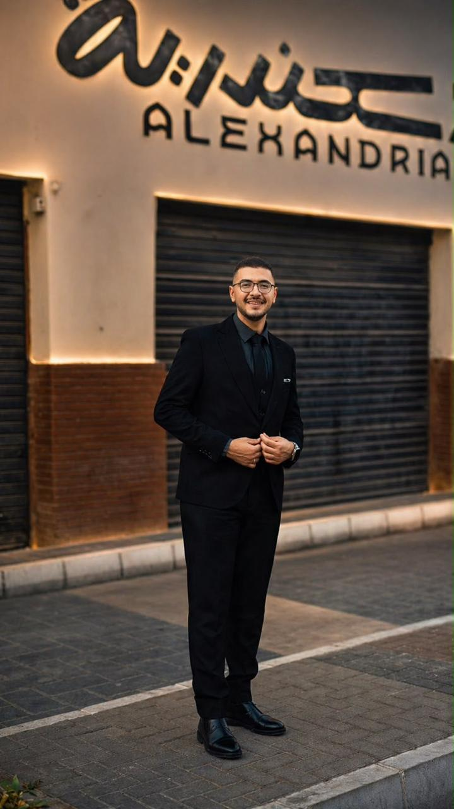
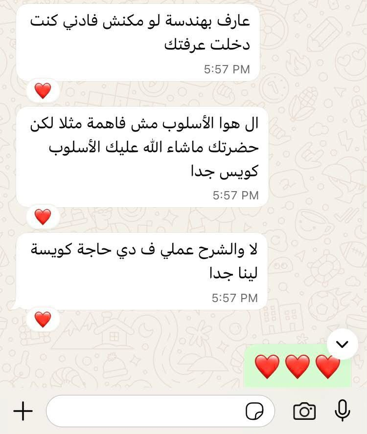
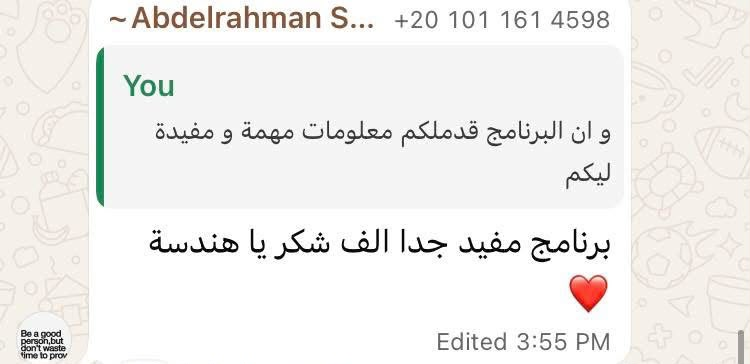
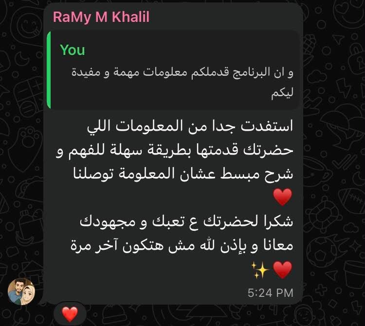

HACCP وسلامة الغذاء
تحليل المخاطر، تحديد نقاط التحكم، إعداد الخطط والسجلات، ودعم التطبيق والمتابعة.
اطلب استشارة ←

أساعد المنشآت الغذائية على بناء أنظمة قابلة للتطبيق، رفع الجاهزية للتفتيش والمراجعات، وتدريب فرق الجودة وسلامة الغذاء.
Lead Auditor · HACCP · ISO 22000 · ISO 9001 · BRCGS
أعمل مع فرق الجودة وسلامة الغذاء لتحويل المتطلبات والمعايير إلى إجراءات وسجلات وممارسات واضحة داخل المصنع.
المهندس أكرم صبري أخصائي واستشاري إدارة سلامة وجودة الأغذية، بخبرة تزيد عن 5 سنوات في قطاعات تصنيع الأغذية والألبان والشوكولاتة.
تشمل مجالات العمل HACCP وISO 22000 وISO 9001 وGMP/GHP وBRCGS وRainforest Alliance والمراجعات الداخلية وتقييم الموردين وإدارة الوثائق.
حلول عملية تبدأ من تقييم الوضع الحالي وتصل إلى نظام قابل للتطبيق والمتابعة.
تحليل المخاطر، تحديد نقاط التحكم، إعداد الخطط والسجلات، ودعم التطبيق والمتابعة.
اطلب استشارة ←بناء وتطوير أنظمة الإدارة والتوثيق والمراجعة الداخلية والاستعداد للتدقيق.
اطلب استشارة ←مراجعة الجاهزية، تحديد حالات عدم المطابقة، ووضع إجراءات تصحيحية قابلة للمتابعة.
اطلب استشارة ←تنظيم متطلبات سلامة الغذاء والوثائق والسجلات اللازمة لرفع جاهزية المنشأة للتفتيش.
اطلب استشارة ←دعم متطلبات التتبع والتوثيق وMass Balance والجاهزية للمراجعة حسب نطاق النشاط.
اطلب استشارة ←مراجعات داخلية وتقييم موردين وبرامج تدريبية تساعد الفريق على تحويل المتطلبات إلى تطبيق فعلي.
شاهد التدريب ←من أول تقييم وحتى المتابعة، بمنهج عملي واضح يناسب طبيعة المنشأة واحتياجاتها.
التعرف على المنتجات والعمليات والوضع الحالي والهدف المطلوب.
مقارنة الوضع الحالي بالمتطلبات وتحديد حالات عدم المطابقة.
إعداد أو تطوير الوثائق ودعم الفريق أثناء التطبيق الفعلي.
تنفيذ المراجعات الداخلية ومتابعة CAPA وفعالية النظام.
حلول مناسبة للمنشآت الغذائية بمختلف أحجامها ومراحلها.
الهدف هو تحويل متطلبات الجودة وسلامة الغذاء من أوراق منفصلة إلى نظام واضح يفهمه الفريق ويستطيع تشغيله ومراجعته وتحسينه.
نماذج توضيحية لطريقة العمل دون افتراض أرقام أو نتائج غير موثقة.
تحليل المخاطر، تحديد نقاط التحكم، وتطوير إجراءات المراقبة والسجلات بما يناسب خط الإنتاج.
مراجعة الفجوات بين المتطلبات والتطبيق، وترتيب الإجراءات التصحيحية حسب الأولوية.
تنظيم إجراءات الشراء والتتبع والتوثيق ودعم الجاهزية لمراجعات السلسلة.
برامج للأفراد وفرق المصانع مع التركيز على الفهم العملي وربط المتطلبات بواقع العمل.
البرامج الاشتراطية الأولية وممارسات التصنيع والنظافة الجيدة.
تحليل المخاطر وتحديد CCP/OPRP وبناء خطة قابلة للتطبيق.
فهم المتطلبات وتوثيق حالات عدم المطابقة والإجراءات التصحيحية.
يمكن إرفاق صور الشهادات أو أرقامها هنا بعد مراجعة البيانات واعتمادها.
يمكنك تحميل السيرة الذاتية بصيغة PDF والتعرف على الخبرات بالتفصيل.
جانب من آراء وانطباعات المشاركين والمتدربين في البرامج والدورات التدريبية.



استشارات HACCP وISO 22000 وISO 9001 وBRCGS، تأهيل المنشآت للتفتيش، المراجعات الداخلية، تقييم الموردين، وتدريب فرق الجودة وسلامة الغذاء.
تبدأ برسالة أو مكالمة قصيرة لفهم النشاط والمنتج والهدف، ثم تقييم الوضع الحالي وتحديد الفجوات والأولويات وخطة العمل المناسبة.
نعم، تتوفر برامج تدريبية للأفراد وفرق المصانع في HACCP وISO والمراجعة الداخلية وممارسات التصنيع والتوثيق الجيد.
أرسل تفاصيل احتياجك لتحديد الخدمة الأنسب حسب طبيعة النشاط.
يسعدني تواصلكم للاستشارات الصناعية أو حجز البرامج التدريبية.
سيتم فتح واتساب برسالة جاهزة بالمعلومات التي تدخلها.